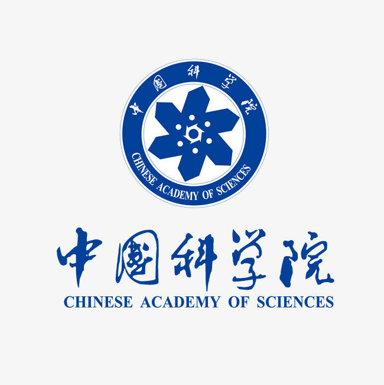
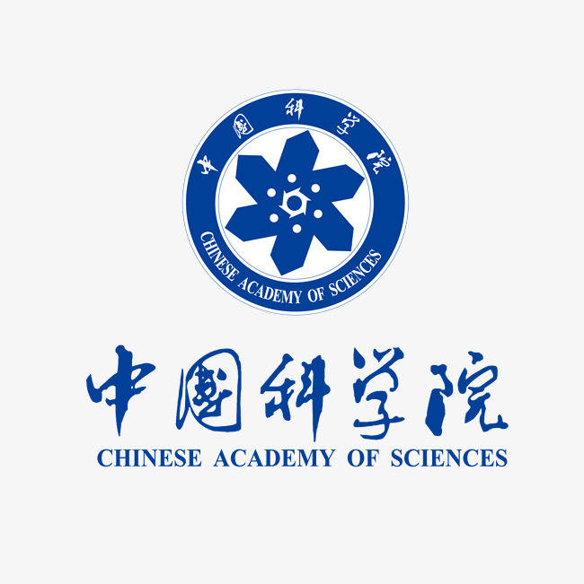
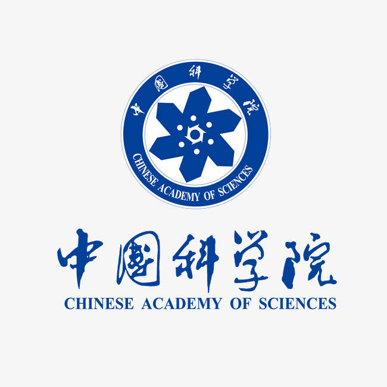

关于我们
为客户满意度提供大量创新解决方案。
24小时全程支援 | 顶级技术支持 | 完善的仓储 | 高级机加工
 

精确监测每一滴雨水，共创更美好的明天
位于北京的洪禹鑫润科技有限公司，致力于为全国各地提供优质、精准的雨量计。我们的产品结合了尖端科技与经久耐用的设计，确保客户在任何气候条件下获得可靠数据。
选择洪禹鑫润，选择信赖。
为客户满意度提供大量创新解决方案。
24小时全程支援 | 顶级技术支持 | 完善的仓储 | 高级机加工


杨经理
现任首席高级工程师
清华电子系博士，专注于水文气象监测产品的研发与销售，核心技术自主可控，性能国际领先。

李总
30年顶级销售经理
产品覆盖全国十余省份，千套部署经验，数据稳定，安全可靠，深受用户信赖。

王总
高级技术支持 | 美国藤校毕业
擅长复杂气候系统环境下部署和支持，提供快速专业的售后解决方案。
办公地址：北京市海淀区清河强佑新城甲1号楼9层903
联系人：柴丽红（电话：15801439347）
销售经理：杨经理（电话：+86 137 0132 9136）
邮箱：yjcsxdl_2023@qq.com
微信联系：